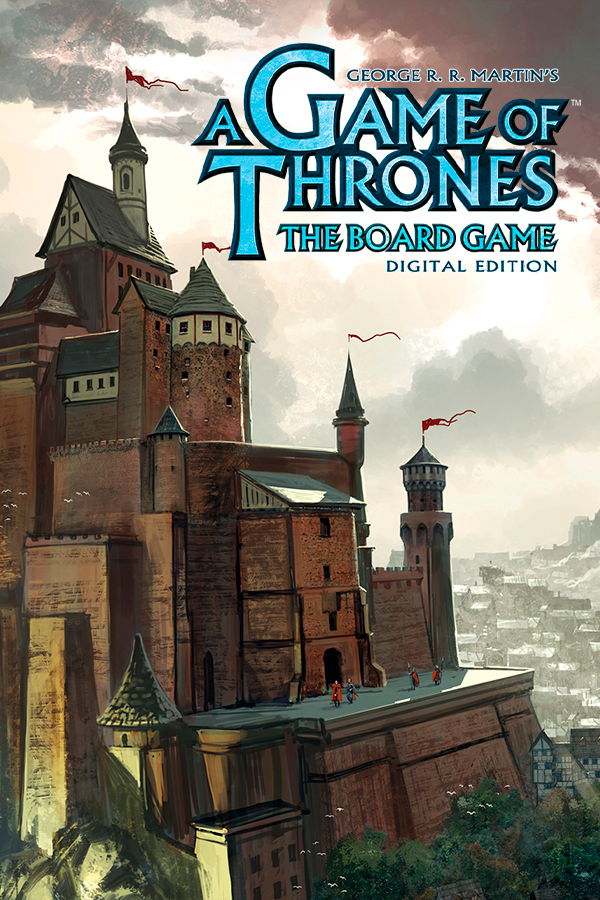

A Game Of Thrones: The Board Game Digital Edition
A Game Of Thrones: The Board Game Digital Edition
Detalhes
|  | |
| Tempo de jogo | Não Jogado |
| Última Atividade | Nunca |
| Adicionado | 18/04/2024 21:08:49 |
| Modificado | 10/03/2025 1:07:09 |
| Status de Conclusão | Not Played |
| Biblioteca | Epic |
| Fonte | Epic |
| Plataforma | PC (Windows) |
| Data de Lançamento | 06/10/2020 |
| Pontuação da Comunidade | 58 |
| Avaliação da crítica | 72 |
| Pontuação do Usuário | |
| Gênero | Board RPG |
| Desenvolvedor | Dire Wolf Digital Fantasy Flight Games |
| Editor | Asmodee Digital |
| Funções | Online Versus Multiplayer |
| Links | PCGamingWiki Official site GOG Database HowLongToBeat IGDB SteamDB MobyGames Wikipedia |
| Tag | [EMT] Video Micro missing |
Descrição
Up to six players can play A Game of Thrones: The Board Game -- Digital Edition online, or a single player can enjoy the game with up to five AI opponents to play locally. The game is set after the death of King Robert Baratheon and allows each player to assume the role of one of the Great Houses of the Seven Kingdoms in an attempt to assault King’s Landing and claim the Iron Throne. To be declared ruler of the Seven Kingdoms, you have 10 rounds to use diplomacy and warfare to your advantage to control as many strategic areas of the map. Conquer with care as your resources are scarce and your troops are not expendable. Muster your army, plan your orders wisely and seize strategical lands with your Footmen, Knights, Siege Engine and ships. During the turmoil of a battle, use well-known characters from your house to take the upper hand and vanquish your enemies. Each round, you secretly assign one order token to each of your armies: promise support, offer peace, forge alliances, betray a vulnerable ally -- a House that dares set its eyes on the Iron Throne must turn many wheels within wheels to achieve its ends. Move up the three influence tracks by betting your hard-earned power tokens. Obtain the Iron Throne, the Messenger Raven and the Valyrian steel tokens, each granting you strategic and social gameplay advantages to hold sway over rival houses. However, keep an eye beyond the Wall as an army of barbaric wildlings gather to descend upon the continent! All houses must cooperate to gather enough power tokens to reinforce the Night’s Watch and fend off the wildlings, or the consequences could be devastating...